Appliance setup
Appliance basic configuration
- Login to raptor and check local ip address of cm
cat /etc/hosts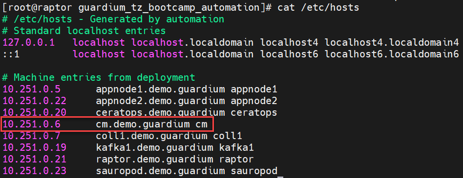
- Login to cm cli using ssh session on raptor
ssh -lcli -p22 cm - Run two commands to pause the data aggregation process. In the test environment, enabled aggregation services may cause unintended delays while waiting for several steps to be completed (the second command will require confirmation).
1 2 3
store run_cleanup_orphans_daily off store purge_age_period 0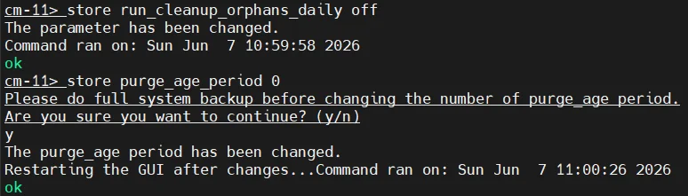
- Display network interfaces and routes to verify connectivity.
1 2 3
show network interface all show network route default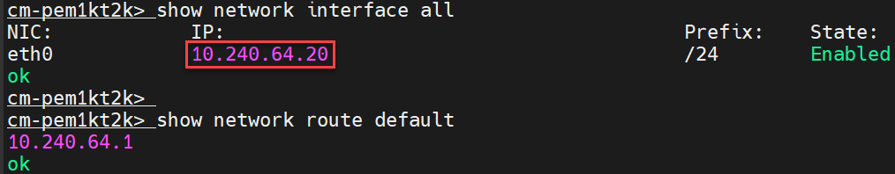
- Notice that the IP address is set to localhost or temporary deployment IP, which is specific to the IBM Cloud environment. Update the IP address to the correct value based on IP address identified in step 1.
store network interface ip <cm_ip_address>/24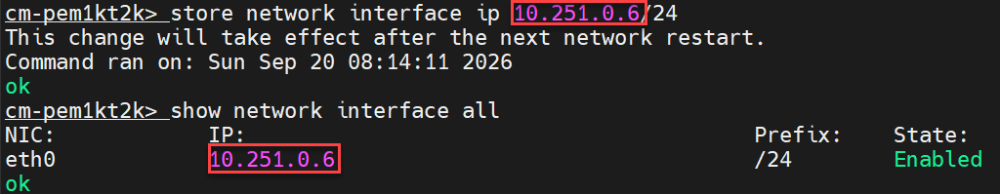
- Check DNS resolver configuration. The list will be empty because the appliance is deployed in the cloud.
show network resolvers - In this case, you can retrieve the dynamically assigned list of local servers using the following command.
show network resolvers_cloud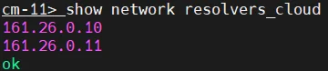
- Test external DNS resolution by pinging a public hostname. Do not interrupt the test with Ctrl+C, because this may terminate the ssh connection.
ping www.ibm.com - Display the current system time settings.
show system clock all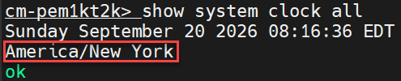
- List available time zones.
store system clock timezone list - Set the system time zone to lab timezone. Wait a few minutes until the change is fully applied. All machines in the lab will use GMT (Europe/London) time zone configuration.
store system clock timezone Europe/London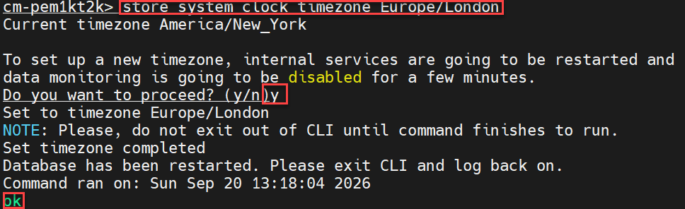
- Re-login to cli session on cm and confirm new time zone.
show system clock all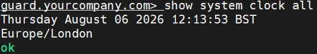
- Configure NTP servers (three pool.ntp.org servers) and enable the NTP client.
store system time_server hostname 0.pool.ntp.org 1.pool.ntp.org 2.pool.ntp.org - Confirm that they are correctly set.
show system time_server all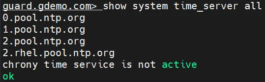
- Activate NTP client, execute:
store system time_server state on - Change the central manager host name to cm. When asked about cloning, answer “y”. This command can take timeout (10 minutes). In that case re-login and confirm than name was set to cm.yourcompany.com and continue.
store system hostname cm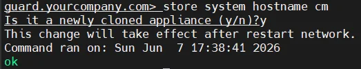
- Set the domain name
store system domain demo.guardium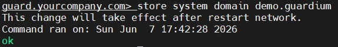
- Re-login and confirm that machine prompt is now set to cm.demo.guardium.
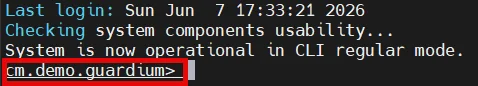
- Restart network, insert Yes to confirm. It is crucial after machine name change because it intiate the GUI certificate recreation.
restart network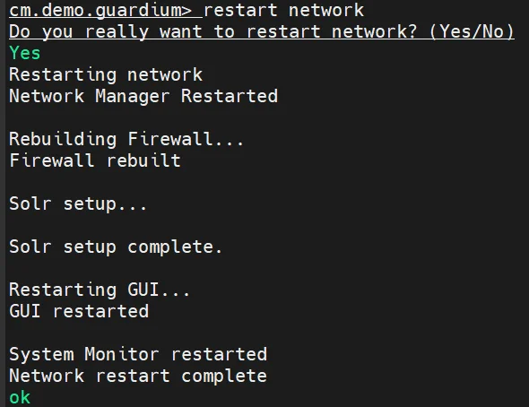
- Because we have multiple cloned appliances in our environment and all share the same Guardium ID (GID), assign a unique ID to each of them before configuring them to work together, use the following command.
store product gid 1111 - All appliances in a centrally managed environment must share the same shared secret. Set it to "guardium" on cm.
store system shared secret guardium - Set cm configuration to accept small disk.
store system small_disk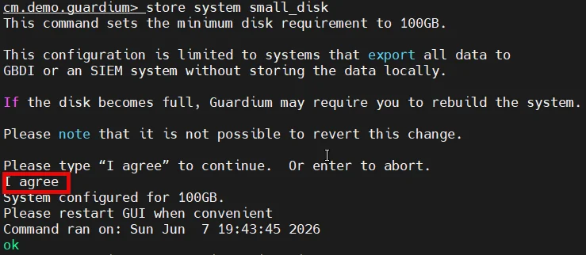
- Increase GUI and CLI session timeouts to avoid unexpected logouts.
1 2 3
store gui session_timeout 9999 store timeout cli_session 600 - Display the static host mappings; initially this list is empty.
support show hosts - Add static host entries for all lab machines (coll1, appnode1, appnode2, kafka1, raptor, sauropod, ceratops)
1 2 3 4 5 6 7 8 9 10 11 12 13
support store hosts <coll1_ip_address> coll1.demo.guardium support store hosts <appnode1_ip_address> appnode1.demo.guardium support store hosts <appnode2_ip_address> appnode2.demo.guardium support store hosts <kafka1_ip_address> kafka1.demo.guardium support store hosts <raptor_ip_address> raptor.demo.guardium support store hosts <sauropod_ip_address> sauropod.demo.guardium support store hosts <ceratops_ip_address> ceratops.demo.guardium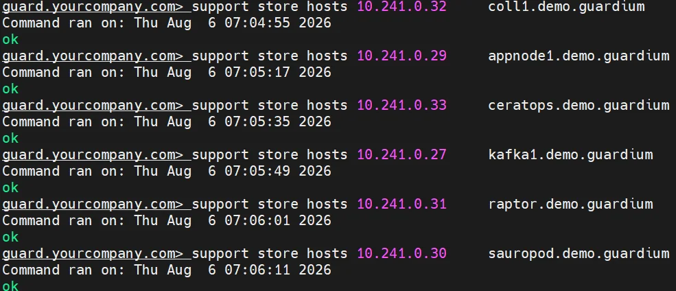
- Display the host list again and confirm that all entries are correctly configured.
support show hosts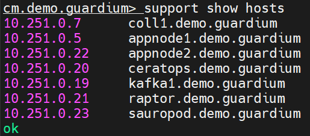
- Restart the cm. If the appliance reports that MySQL is archiving, choose “No” to abort the restart and try again later, as shown in the screenshot.
restart system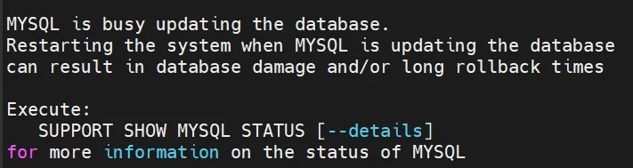
- Reconnect to the cm and check appliance unit type. The appliance is an aggregator and is not yet configured as a central manager.
show unit type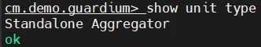
- The system has valid license keys loaded, so you can now promote the aggregator to be a Central Manager. This command may take some time as it activates all services required for managing the appliance group
store unit type manager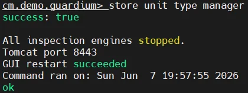
- You can proceed with the next part of the lab and return to this CLI session once the command above is completed. Then verify that the aggregator has been successfully promoted to a manager.
show unit type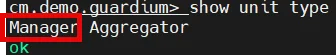
{kind=link}
{kind=link}
{kind=link}
{kind=link}
{kind=link}
{kind=link}
{kind=link}
{kind=link}
{kind=link}
{kind=link}
{kind=link}
{kind=link}
{kind=link}
{kind=link}
{kind=link}
{kind=link}
{kind=link}
{kind=link}
{kind=link}
{kind=link}
Other appliances setup
- Sign in to the coll1 collector from raptor and execute a set of configuration commands to prepare the machine for connection to the cm.
1 2 3
store run_cleanup_orphans_daily off store network interface ip <coll1_ip_address>/24 - Set the correct time zone (it should match the one configured on the cm) and re-login to the collector.
store system clock timezone Europe/London - Then configure NTP, as well as the host name and domain. Make sure to confirm that the appliance is cloned when prompted during hostname configuration.
1 2 3 4 5 6 7
store system time_server hostname 0.pool.ntp.org 1.pool.ntp.org 2.pool.ntp.org store system time_server state on store system hostname coll1 store system domain demo.guardium - Re-login and confirm that the command prompt reflects the configured hostname.
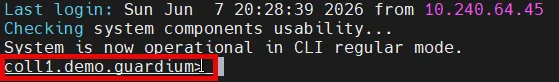
- Execute the remaining configuration commands and reboot the appliance.
1 2 3 4 5 6 7 8 9 10 11 12 13 14 15 16 17 18 19 20 21 22 23 24 25 26 27 28 29
restart network store product gid 2222 store system shared secret guardium store system small_disk store gui session_timeout 9999 store timeout cli_session 600 support store hosts <cm_ip_address> cm.demo.guardium support store hosts <appnode1_ip_address> appnode1.demo.guardium support store hosts <appnode2_ip_address> appnode2.demo.guardium support store hosts <kafka1_ip_address> kafka1.demo.guardium support store hosts <raptor_ip_address> raptor.demo.guardium support store hosts <sauropod_ip_address> sauropod.demo.guardium support store hosts <ceratops_ip_address> ceratops.demo.guardium support show hosts restart system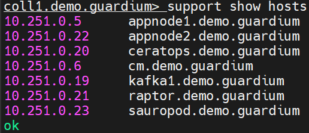
- Now perform the same steps on the appnode1 node.
1 2 3 4 5
store run_cleanup_orphans_daily off store network interface ip <appnode1_ip_address>/24 store system clock timezone Europe/London - Re-login and continue on the appnode1
1 2 3 4 5 6 7
store system time_server hostname 0.pool.ntp.org 1.pool.ntp.org 2.pool.ntp.org store system time_server state on store system hostname appnode1 store system domain demo.guardium - Re-login to appnode1 and confirm that name is changed
1 2 3 4 5 6 7 8 9 10 11 12 13 14 15 16 17 18 19 20 21 22 23 24 25 26 27
restart network store product gid 3333 store system shared secret guardium store system small_disk store gui session_timeout 9999 store timeout cli_session 600 support store hosts <cm_ip_address> cm.demo.guardium support store hosts <coll1_ip_address> coll1.demo.guardium support store hosts <appnode2_ip_address> appnode2.demo.guardium support store hosts <kafka1_ip_address> kafka1.demo.guardium support store hosts <raptor_ip_address> raptor.demo.guardium support store hosts <sauropod_ip_address> sauropod.demo.guardium support store hosts <ceratops_ip_address> ceratops.demo.guardium restart system - Then do the same steps on the appnode2 node.
1 2 3 4 5
store run_cleanup_orphans_daily off store network interface ip <appnode2_ip_address>/24 store system clock timezone Europe/London - Re-login and continue on the appnode2
1 2 3 4 5 6 7
store system time_server hostname 0.pool.ntp.org 1.pool.ntp.org 2.pool.ntp.org store system time_server state on store system hostname appnode2 store system domain demo.guardium - Re-login to appnode2 and confirm that name is changed
1 2 3 4 5 6 7 8 9 10 11 12 13 14 15 16 17 18 19 20 21 22 23 24 25 26 27
restart network store product gid 4444 store system shared secret guardium store system small_disk store gui session_timeout 9999 store timeout cli_session 600 support store hosts <cm_ip_address> cm.demo.guardium support store hosts <coll1_ip_address> coll1.demo.guardium support store hosts <appnode1_ip_address> appnode1.demo.guardium support store hosts <kafka1_ip_address> kafka1.demo.guardium support store hosts <raptor_ip_address> raptor.demo.guardium support store hosts <sauropod_ip_address> sauropod.demo.guardium support store hosts <ceratops_ip_address> ceratops.demo.guardium restart system - We must do this same for kafka1 appliance as well
1 2 3 4 5
store run_cleanup_orphans_daily off store network interface ip <kafka1_ip_address>/24 store system clock timezone Europe/London - Re-login and continue on kafka1
1 2 3 4 5 6 7
store system time_server hostname 0.pool.ntp.org 1.pool.ntp.org 2.pool.ntp.org store system time_server state on store system hostname kafka1 store system domain demo.guardium - Re-login to kafka1 and confirm that name is changed
1 2 3 4 5 6 7 8 9 10 11 12 13 14 15 16 17 18 19 20 21 22 23 24 25 26 27
restart network store product gid 5555 store system shared secret guardium store system small_disk store gui session_timeout 9999 store timeout cli_session 600 support store hosts <cm_ip_address> cm.demo.guardium support store hosts <coll1_ip_address> coll1.demo.guardium support store hosts <appnode1_ip_address> appnode1.demo.guardium support store hosts <appnode2_ip_address> appnode2.demo.guardium support store hosts <raptor_ip_address> raptor.demo.guardium support store hosts <sauropod_ip_address> sauropod.demo.guardium support store hosts <ceratops_ip_address> ceratops.demo.guardium restart system
{kind=link}
{kind=link}
Add user and create dashboard
- Login to cm UI as an accessmgr user (use this same password like you used for cli access to appliances) and press Add User button in Access manager view
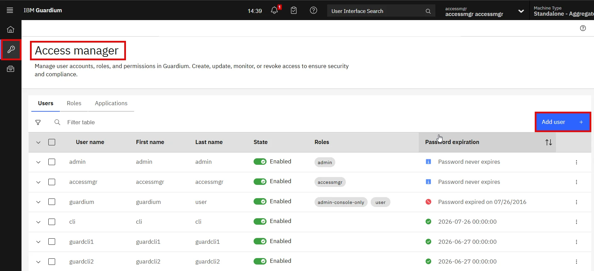
- Create a new user - demo. Set password and description. Expand the Roles panel and select: admin, cli, fam, user and vulnerability assess roles.
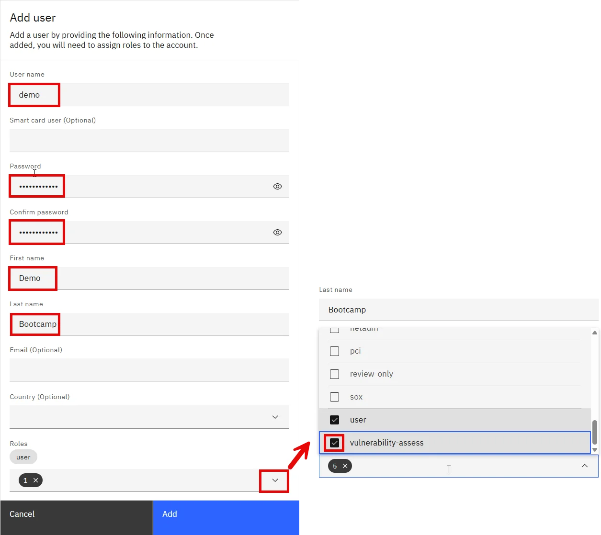
- Scroll slightly down, select Password never expires, then click Add to create the user.
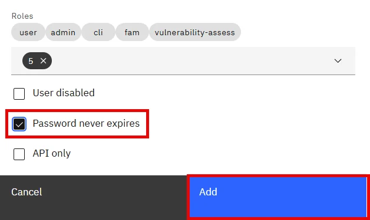
- The newly created user should appear at the bottom of the list. Then, use the State toggle for the guardium account to deactivate it.
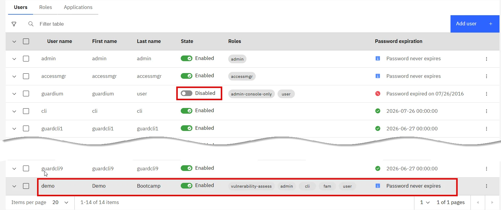
- Sign out of the accessmgr account and sign in as the newly created demo user.
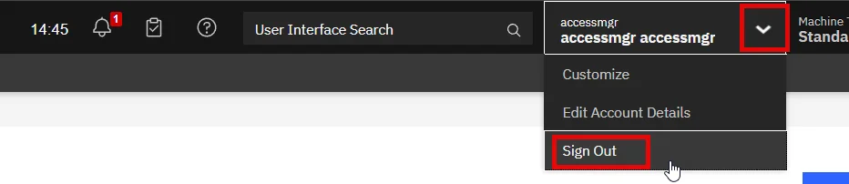
- In the Search field, enter License to filter the options. Select the License view and review the installed license keys. The Central Manager, as mentioned earlier, has pre-installed license keys for a centrally managed environment. Functional (append) keys enable DAM, FAM and VA features.
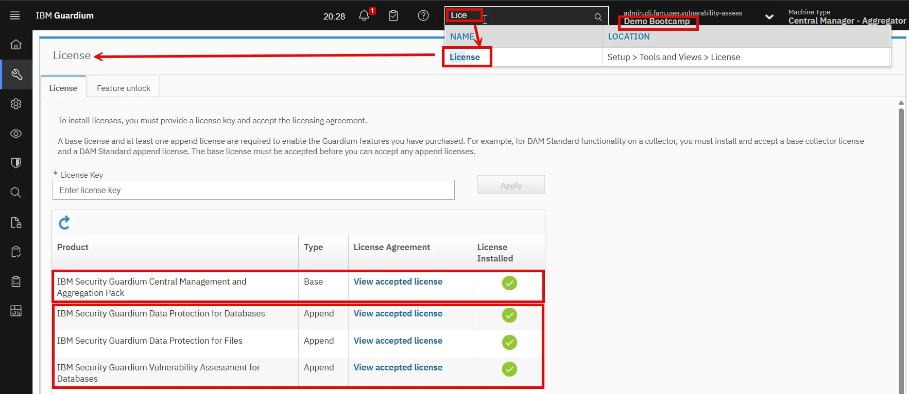
- Navigate to the Feature Unlock tab and verify that the additional features have been loaded into the system. Note that this does not mean they have been activated.
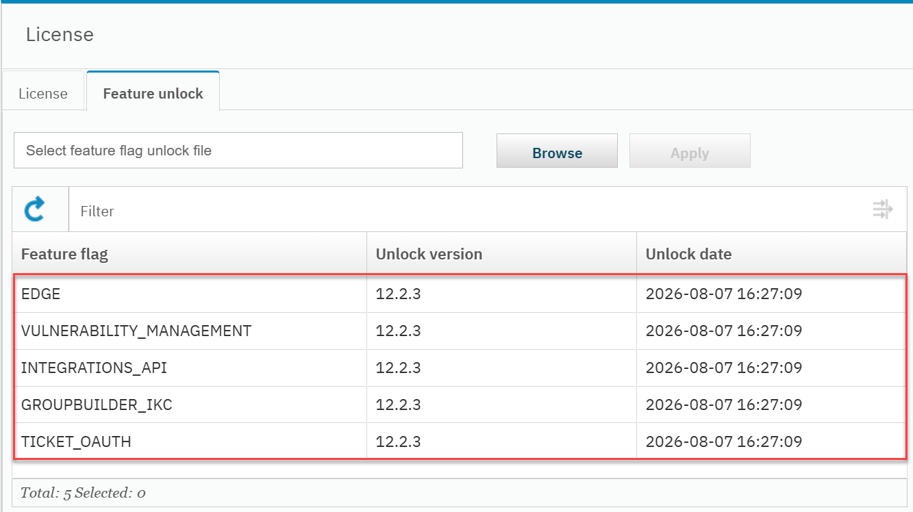
- Next, select Definition Export/Import, go to the Import tab, choose the report definition file
exp_report_two_of_training_dasboard.sqlfrom your exports folder (student materials), and click Upload file.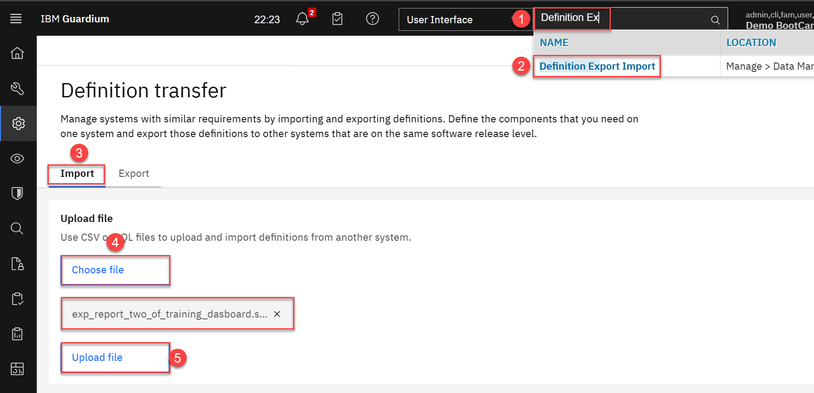
- After a moment, the Full SQL (Training) report should appear in the Uploaded files section. Select it and click Import.
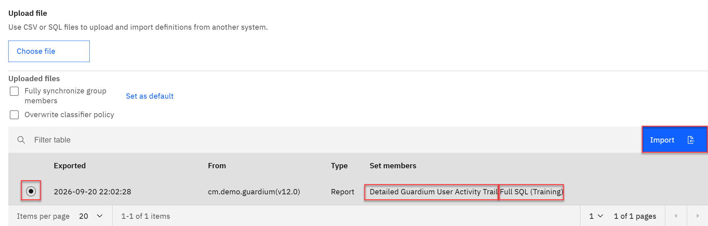
- After a moment, a confirmation message should appear indicating the report was successfully imported.
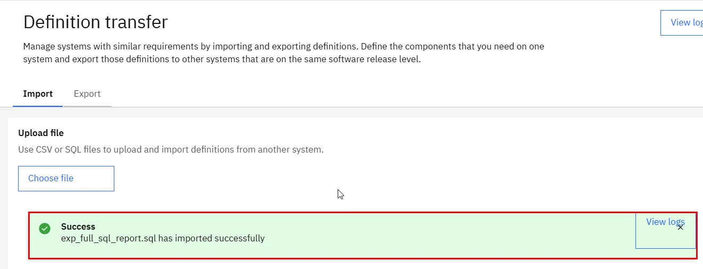
- Repeat the import process, but this time use the
exp_default_policy.sqlfile. This will load the policy named Default bootcamp policy.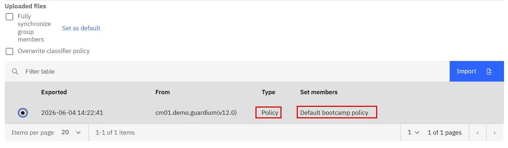
- To create a dashboard, select the My Dashboards icon from the vertical menu, then choose Create New Dashboard. Edit the name (pencil icon) to Training and click Save. Next, click Add Report to open the report selection window and add three reports: the newly imported Full SQL (Training) and the built-in SQL Errors and S-TAP and External S-TAP Statistics. Reports are added to the dashboard upon selection from the list.
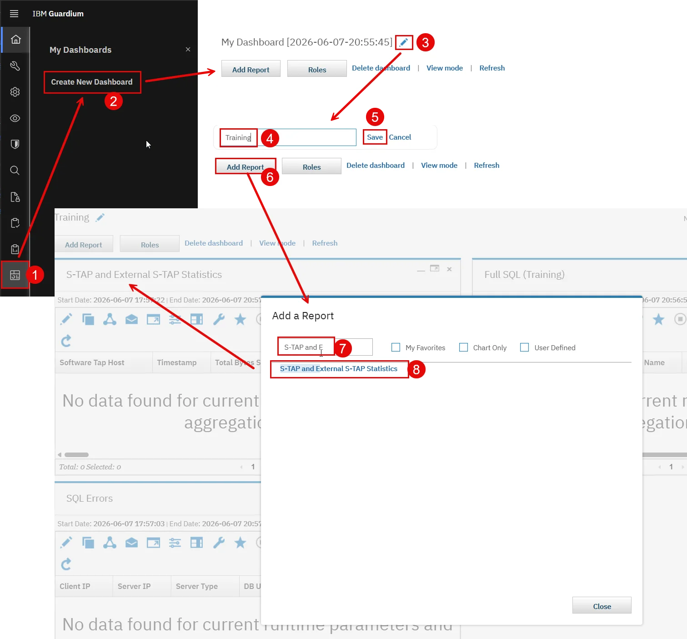
{kind=link}
{kind=link}
{kind=link}
{kind=link}
{kind=link}
{kind=link}
{kind=link}
{kind=link}
{kind=link}
{kind=link}
{kind=link}
{kind=link}
Uwaga
Use demo account for all UI activities in the bootcamp labs unless a different one is explicitly required.
Register appliances
- From cm UI open Central Management application and select Register unit button from Actions list. Notice that there are no appliances managed by our Central Manager yet. Register unit pop-up will provide the possibility to insert coll1 Unit IP (select appropriate one) and default communication port (8443) then press Register button.
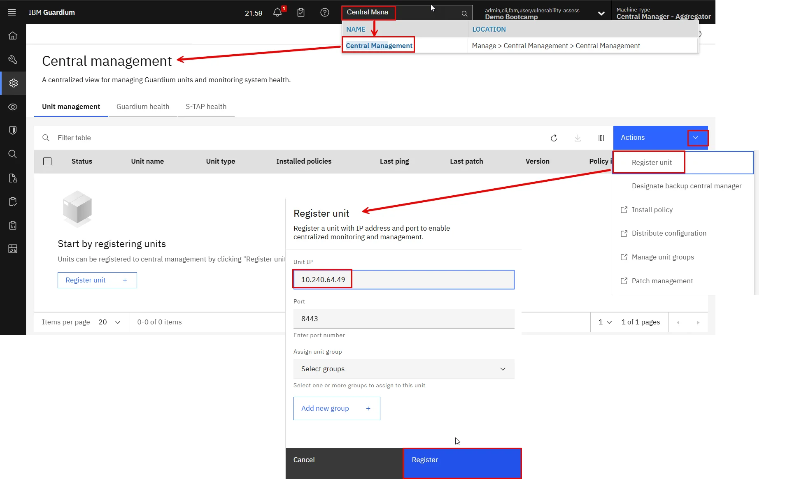
- After a longer wait (be patient), the view should refresh and the coll1 collector will appear in the managed appliances list. Its presence on the list does not yet mean full synchronization—this process may take a few more minutes.
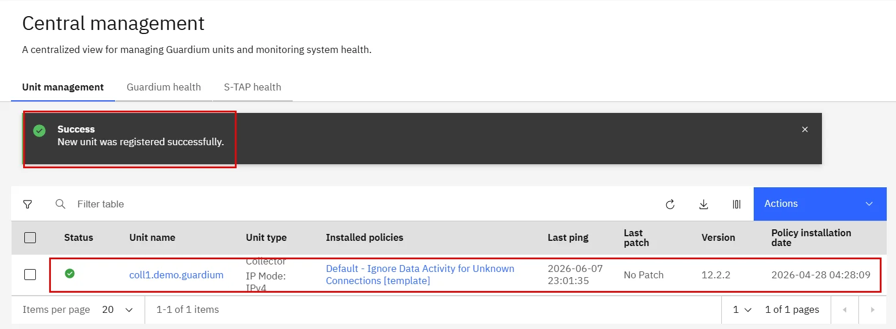
- Sign in to the coll1 via CLI and notice that the appliance mode has changed from Standalone to Managed.
show unit type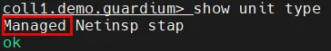
- Repeat the full appliance registration process on appnode1, appnode2 and kafka1 and confirm that all appliances are visible from the cm Central management view.
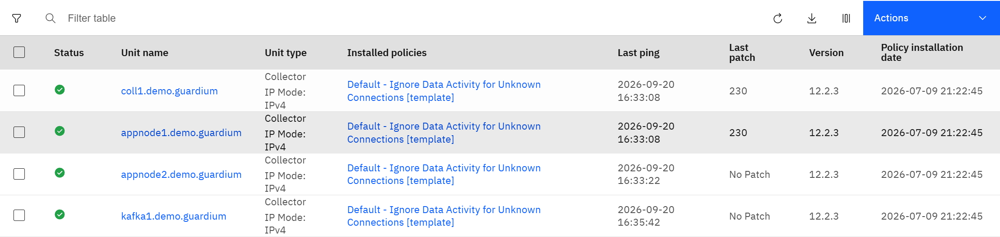
{kind=link}
{kind=link}
{kind=link}
{kind=link}
Central Manager patching
Screenshots
Screenshots in this section may not exactly match the patch numbers available in your environment. The labs are frequently updated, so there may be some inconsistencies between this documentation and what is present on the machines.
- In cm UI, open Installed Patches to confirm which patches are currently installed.
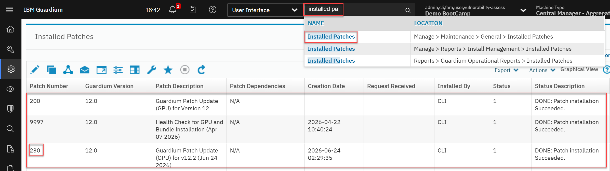
- On raptor, there are several additional patches available that we will install on the cm. Patches are files with the
.sigextension.ls -l /opt/guardium_tz_bootcamp_automation/upload/source_files/appliances/patches/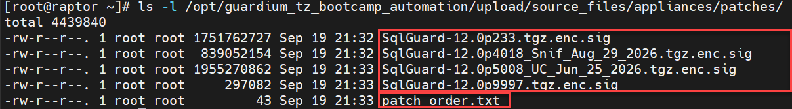
- The directory also contains a
patch_order.txtfile that specifies the correct order for applying patches. In the next step, you will provide a list of patches for installation - make sure to follow the installation sequence defined in this file.cat /opt/guardium_tz_bootcamp_automation/upload/source_files/appliances/patches/patch_order.txt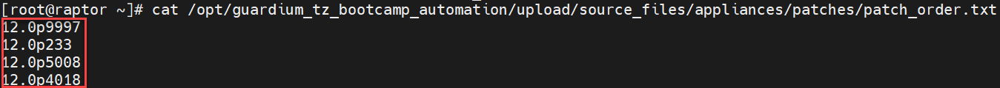
-
Login to cm cli and upload all patches to it using flow below. Execute command:
store system patch install scpInsert:
- raptor IP address: raptor.demo.guardium
- user name: root
- patch path:
/opt/guardium_tz_bootcamp_automation/upload/source_files/appliances/patches/*.sig - Port: 2223
- password for root account on raptor
Finally, you will be asked for order of patch installation, it must be comma separated list based on patch numbering on the displayed list (for example 4,3,2,1), please use correct order provided in patch_order.txt file mentioned above. Some other patches will be on the list - ignore them, they are related to previous patch processes.
Note
You will be asked for patch 9997 reinstallation confirmation - accept this!
-
Monitor installation progress using the relevant patch status commands. Some patches temporarily stop backend services, so one view may show errors. Check the list of downloaded patches on cm
show system patch available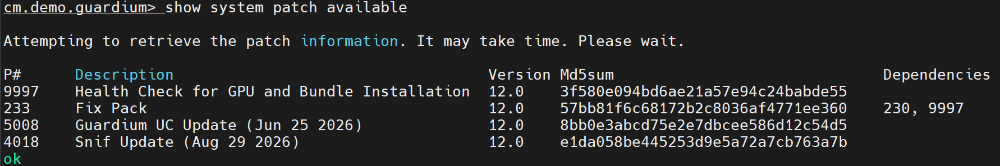
-
All freshly uploaded patches will be scheduled, and you can monitor the installation process using commands:
show system patch installed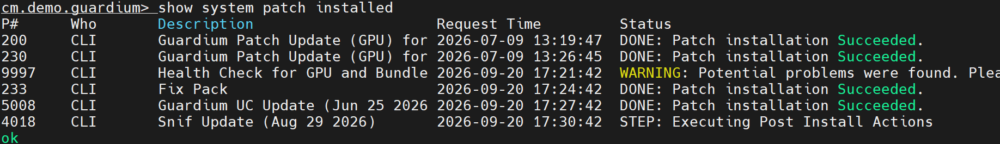
andshow system patch status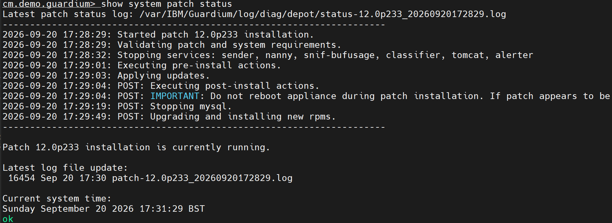
The first command can produce errors if some patch installation tasks require stop collector backend (MySQL). In this case you can use the second one to check the progress.Note
Process can take several minutes (depending on patches applied during this course instance) and you must wait that all scheduled patches will be installed successfully. Some patches can force collector restart and you must re-login.
-
Confirm that all patches are installed. You can noticed warning at patch 9997 – you can ignore it.
show system patch installed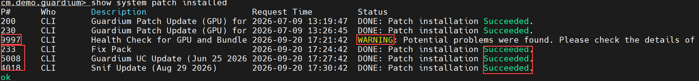
- It is good practice to schedule the re-installation of patch 9997 at the beginning of every appliance patching process to ensure that the latest version available on the cm is installed.
{kind=link}
{kind=link}
{kind=link}
{kind=link}
{kind=link}
{kind=link}
{kind=link}
{kind=link}
Collectors patching
- Patching the remaining appliances can be managed centrally from the cm. In the cm UI, open Patch Management.
From the Available patches section, select patch 9997 (first in the
patch_order.txtlist), then select your collectors in the Guardium systems section. Click Install, which opens a popup where you can schedule the patch installation. Choose NOW for immediate deployment and confirm by clicking Install. A confirmation popup should appear indicating that the installation job has been successfully created.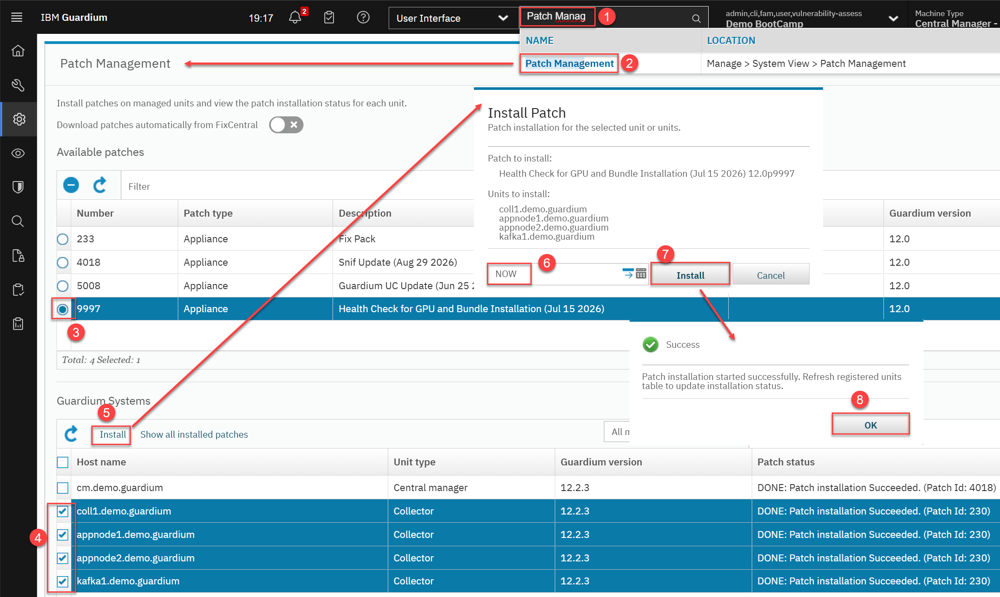
- Repeat these steps for all other patches mentioned in
patch_order.txtlist. - To check the patch installation status, select one of the appliances and choose Show all installed patches. This will open a window displaying the list of patches on that system. You should see the newly scheduled patches listed with various installation statuses. Confirm that all patches have been installed.
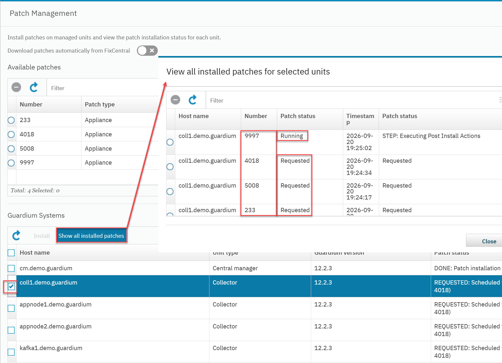
{kind=link}
{kind=link}
Collector default policy
-
A newly deployed collector has a default policy assigned that ignores all activity. To start collecting traffic, you need to install a meaningful policy—use the one previously imported. In the cm UI, open Security Policies, filter the view to show only policies (uncheck Include templates), select Default bootcamp policy, and from the actions list choose Install. In the popup, select your coll1.demo.guardium and choose the installation type Install and override, then confirm with OK. You should receive confirmation that the policy has been installed on the coll1. Do not install this policy on other appliances, as they will be used for a different purposes.
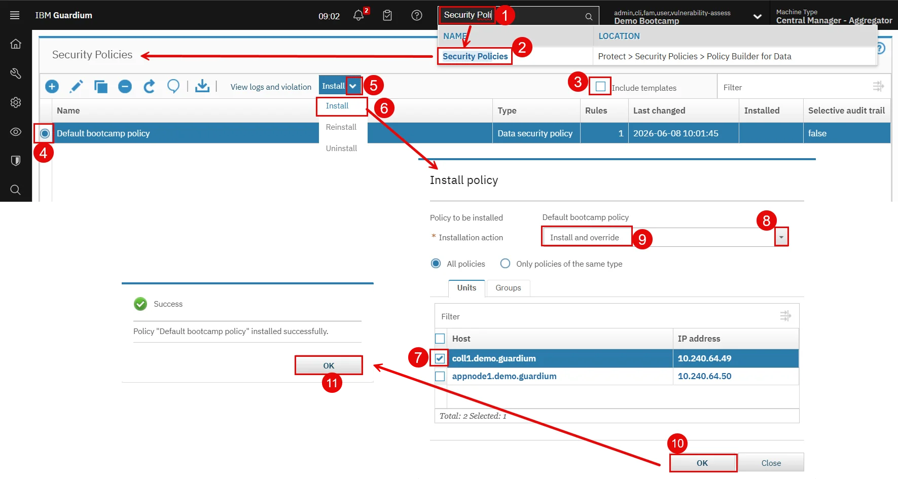
-
Open Central management view on cm. Verify that we have our policy installed on collector coll1 and generic one is still applied on the rest appliances.
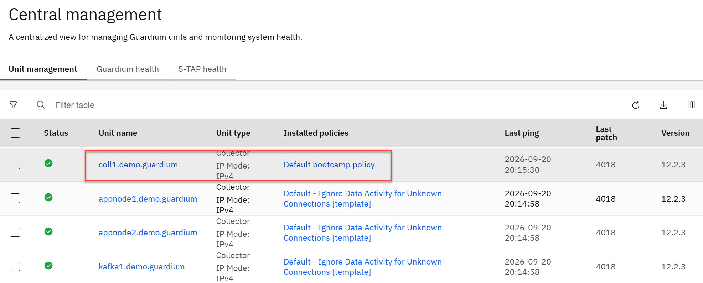
{kind=link}
{kind=link}
Backup, configuration profiles (optional)
-
To configure scheduled appliance backup open in cm GUI the System Backup view
Use this information to fill in a form:
Endpoint URL: s3.ams03.cloud-object-storage.appdomain.cloud
Access Key ID: 2a20bcab1bfc4503bc5466cd549aba6e
Secret access key: <value available from TZ env materials>
-
Use Test connection button to check correctness of inserted values and then close pop-up message and Save configuration. Do not run the backup on the cm; we will do it in a moment on the coll1.
-
In the centrally managed environment we can spread some configuration settings across managed appliances to avoid repetion of this same tasks in the large installation. Let’s do this with backup configuration. Open Distribute Configuration Profiles view and add a new one.
-
Insert the Name, for example – Backup configuration and press Next button
-
In the What to distribute section create a new one and select System Backup
-
Similar to backup configuration for cm, define this same bucket and Save configuration
Abstract
Endpoint URL: s3.ams03.cloud-object-storage.appdomain.cloud
Access Key ID: 2a20bcab1bfc4503bc5466cd549aba6e
Secret access key: <value available from TZ env materials>
Then press Bucket Name button and select bucket-2znplpxrvg22c3v bucket. Select only Configuration checkmark.
-
Just created configuration asset will appear on the list. Press Next button
- In the Where to distribute panel select All Collectors group and move it to Selected groups section. Then press Next button.
- Save configuration and press Run Now button to send configuration to the collector
- Monitor the progress of profile distribution. Finally the Review distribution results section should appear and confirm that coll1 and the rest of collectors are successfully synchronized.
- Login to coll1 UI and confirm that System Backup configuration has been successfully set. Press Run Once Now button
- You can check status of task in Aggregation/Archive Log report (on coll1)
- Ask instructor to display content of bucket
{kind=link}
{kind=link}
{kind=link}
{kind=link}
{kind=link}
{kind=link}
{kind=link}
{kind=link}
{kind=link}
{kind=link}
{kind=link}
{kind=link}
{kind=link}
guardcli accounts (optional)
- cli accounts are shared ones. To manage cli access accountable the Guardium introduce on each appliance the nine additional accounts from guardcli1 to guardcli9 (they have OTP set to guardium). Let’s us configure accountable access to cm cli.
- From raptor connect to cm using guardcli1 shared account (instead cli one) and reset password from OTP “guardium” to desired one if you will asked for change (must be strong, you can notice a bug and could be forced to change password two times), so execute from raptor:
ssh -l guardcli1 -p22 cm -
Try to execute any administration command, for example:
show network int all -
You will be informed that you cannot execute commands before reauthentication using the named UI account. Then activate a full access to the CLI using command below (provide correct password for demo UI account). Then execute any administration command to confirm this ability now.
1 2 3
set guiuser demo show network int all -
Add to your Training dashboard on cm the Detailed Guardium User Activity Trail report. If Add Report button is inactive you must activate it by clicking Edit mode
-
Open just added report in the Dashboard on cm. Notice that your guardcli1 session is marked as belonging to demo UI account and we can track activity correctly.
- On the fresh installed appliance all guardcliX accounts have the well known OTP password – guardium. The good administration approach is access control to all proxy accounts. A good practice is to block those accounts or change the password to prevent unauthorized login attempts. To list guardcliX account status execute in CM cli session:
show guarduser_state all -
Disable all proxy accounts - except just used above the guardcli1 - by execution commands:
store guarduser_state disable <guardcli[2-9]>Proxy account should be now set this way
{kind=link}
{kind=link}
{kind=link}
{kind=link}
{kind=link}
{kind=link}
Appendix
Dependencies:
IBM Cloud URL for COS. It is COS bucket belonging to zibi. In case of self-managed training or led by another instructor the backup lab should refer to appropriate, accessible COS bucket.
Resources:
Instructor notes: